Green Lantern: Rebirth (2004 – 2005)
The perfect entry point: Hal Jordan returns, and the entire modern mythology begins. Start here. Collected in Green Lantern: Rebirth.
History
Two ways to follow the saga: the comics in reading order, and the history of the universe itself.
The Geoff Johns saga — the run that built the modern Lantern mythos, in the order to read it. Spoiler-light: titles and premises only.
Everything here is on DC Universe Infinite (the comics subscription app) and in the collected editions noted under each entry.
The perfect entry point: Hal Jordan returns, and the entire modern mythology begins. Start here. Collected in Green Lantern: Rebirth.
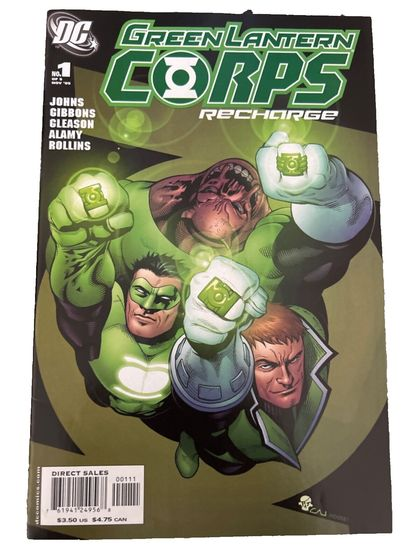
The Corps rebuilds itself, ring by ring. Collected in Green Lantern Corps: Recharge.

The road to war — Sinestro's shadow lengthens over everything. Collected in Green Lantern by Geoff Johns Omnibus Vol. 1.

Fear declares war on will across Green Lantern and Green Lantern Corps. The saga's first peak. Collected in Green Lantern: The Sinestro Corps War (vols. 1–2).
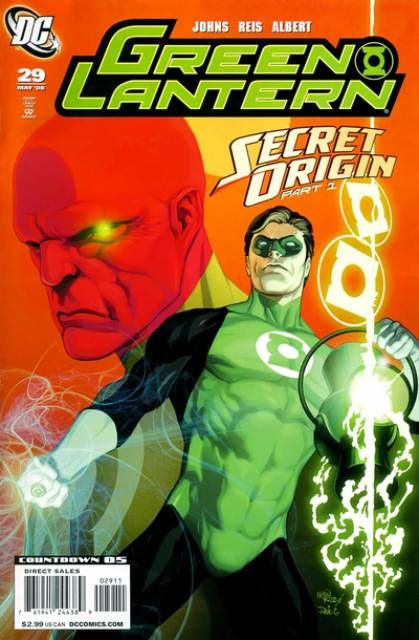
Hal Jordan's origin, retold. Reads fine on its own. Collected in Green Lantern: Secret Origin.

Rage enters the spectrum, screaming. Collected in Green Lantern: Rage of the Red Lanterns.
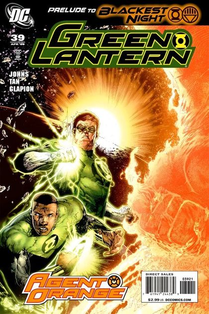
Meet Larfleeze, the greediest being alive. Bring snacks. (Don't.) Collected in Green Lantern: Agent Orange.
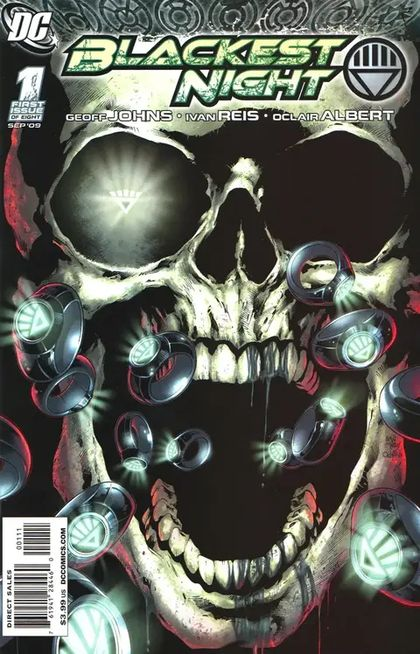
The dead rise. The event the whole saga was building toward — no spoilers beyond that. Collected in Blackest Night / Blackest Night Omnibus.

The aftermath — and what comes after the darkest night. Collected in Brightest Day (vols. 1–3).

The Corps turns on itself. The Johns era's closing act. Collected in Green Lantern: War of the Green Lanterns.
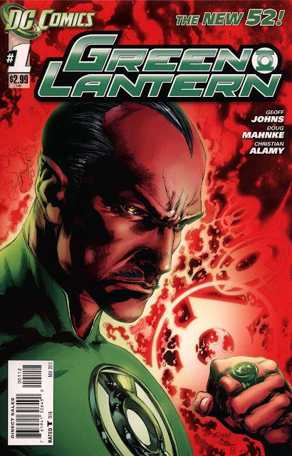
The universe reboots; the Corps starts over. Hal, John, Guy, and Kyle navigate a new status quo — plus the Red Lanterns ongoing and Sinestro's solo series. Start with Green Lantern (vol. 5) #1.
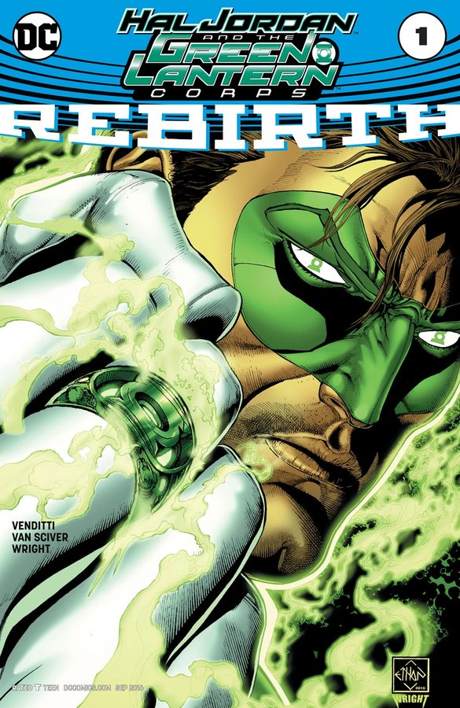
Hal Jordan and the Green Lantern Corps reunites the legends; Green Lanterns introduces Jessica Cruz and Simon Baz, the Corps' newest Earth Lanterns. Start with Hal Jordan and the Green Lantern Corps: Rebirth #1.

Grant Morrison's psychedelic, police-procedural take on Hal Jordan — the most divisive and discussed GL run in years. Collected in The Green Lantern vols. 1–3.
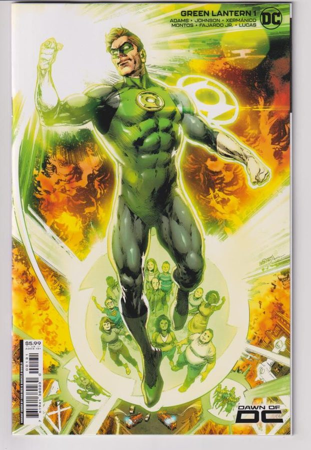
Jeremy Adams' Green Lantern brings Hal home to Earth; Green Lantern: War Journal follows John Stewart. The saga continues monthly. Start with Green Lantern (2023) #1.
The broad strokes of cosmic history — no plot specifics, just the shape of things.
Billions of years ago

After their android Manhunters malfunction with catastrophic results, the Guardians of the Universe try a new approach: living volunteers, chosen for willpower, armed with rings and organized by sector. The Green Lantern Corps is born on Oa.
Eons ago

The Manhunters slaughter every living thing in an entire sector. Five beings survive. One of them — Atrocitus — nurses his rage across the ages until the red light answers. The Corps' oldest sin becomes its most furious enemy.
Long ago

Larfleeze claims the orange light of avarice and refuses, for the rest of time, to share it. The Guardians — who want no war over the Vega system — agree to leave him and his hoard alone. A pact that holds... mostly.
1940

Long before Hal Jordan, a railroad engineer named Alan Scott finds a mystical green lantern — the Starheart, a chunk of wild magic, not Corps technology. He becomes Earth's first Green Lantern, and his light burns for years before the Corps ever comes calling.
1959
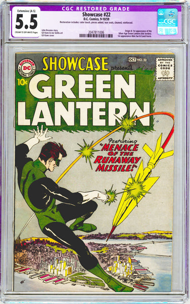
A dying Abin Sur's ring chooses fearless test pilot Hal Jordan. In Showcase #22, the Silver Age Green Lantern is born — and the modern mythos begins.
1961
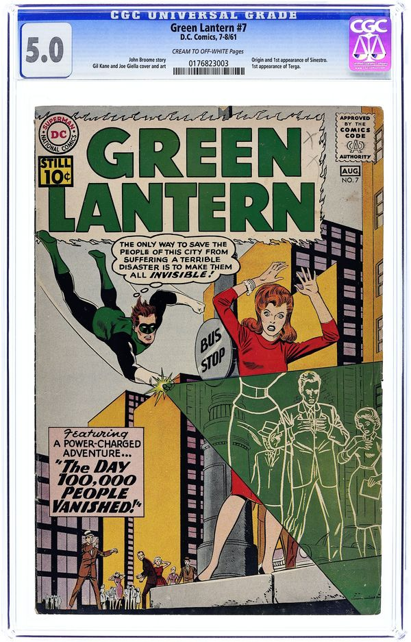
The Corps' greatest Lantern is exposed as a tyrant on Korugar. Exiled to Qward, he forges a yellow ring — and becomes the Green Lanterns' greatest enemy.
1988
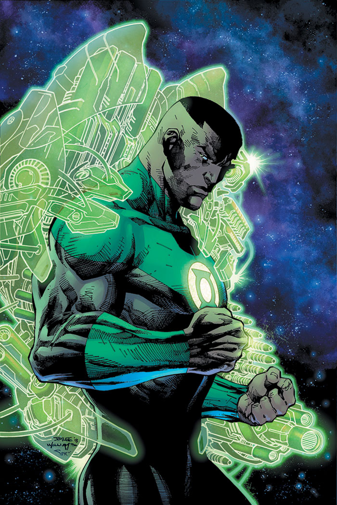
John Stewart's arrogance destroys a world — his greatest failure (1988).
The modern age
Disaster strikes the Green Lantern Corps at its very heart, and for a time the green light nearly goes out. From the ashes, a new generation — Hal Jordan, Kyle Rayner, John Stewart, Guy Gardner — rebuilds it ring by ring.
The modern age

Exiled for tyranny, Sinestro forges the yellow light into a mirror of the Corps he once served. The Sinestro Corps declares war — and the universe learns that willpower has a flaw: it always feared something.
The modern age

One by one, the other lights step out of myth and into the open: rage on Ysmault, hope on Odym, compassion on Nok, love on Zamaron. The War of Light begins — every color arming for a conflict the Guardians saw coming and tried to bury.
Eons ago

The Guardians' android police force turns against organic life, culminating in the Massacre of Sector 666. The failure teaches the Guardians that order without emotion is tyranny.
1940
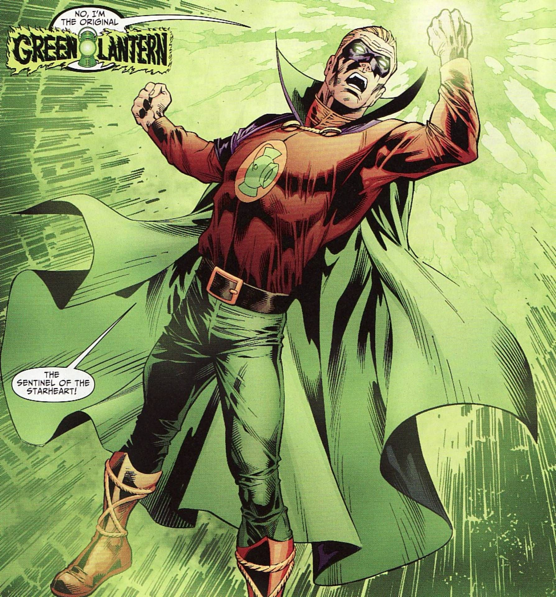
In 1940, Alan Scott forges a power ring from the magical Starheart flame, becoming the Golden Age Green Lantern — decades before Hal Jordan.
2008

Ganthet and Sayd forge hope into rings on Odym; Saint Walker becomes the first Blue Lantern (2008).
2008

Abin Sur founds a Corps of rehabilitated criminals on Nok, powered by compassion (2008).
2007

The Zamarons forge the violet light into rings; Carol Ferris becomes their greatest champion (2007).
2007

Atrocitus forges the Red Lantern Corps from blood and vengeance on Ysmault (2007).
The prophecy
Every Corps fears the same ancient prophecy: that death itself will one day rise against all light and all emotion. What happens next... is still being read.
1993
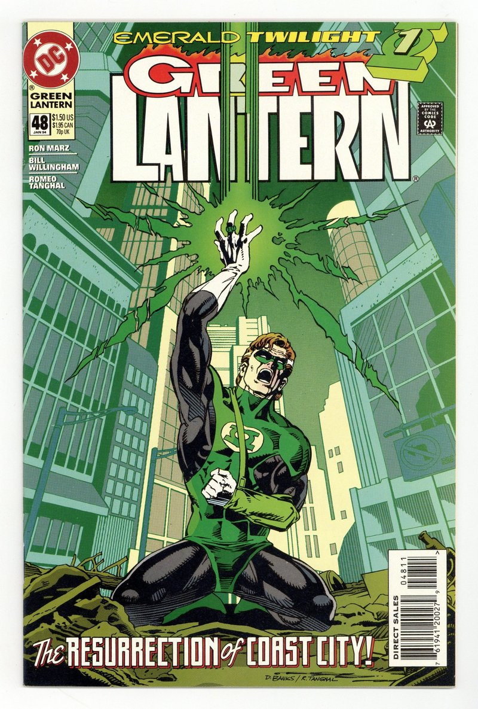
Mongul destroys Hal Jordan's home, killing seven million. The grief breaks Hal — and sets him on the path to Emerald Twilight.
2005

Rebirth reveals the yellow impurity's secret: Parallax, the fear entity, imprisoned in Oa's Battery. Hal Jordan is redeemed — he was its host all along.

In 2013, Kyle Rayner masters all seven lights of the emotional spectrum and forges a white power ring, becoming the White Lantern.
The Guardians betray the Corps, unleashing an army of assimilating drones to erase free will across the universe (2012–13).

Sinestro executes the Guardians of the Universe in revenge for Korugar's destruction (2013).
The Lanterns beyond the comics — the films and series that carried the light to new audiences.
2001 – 2006
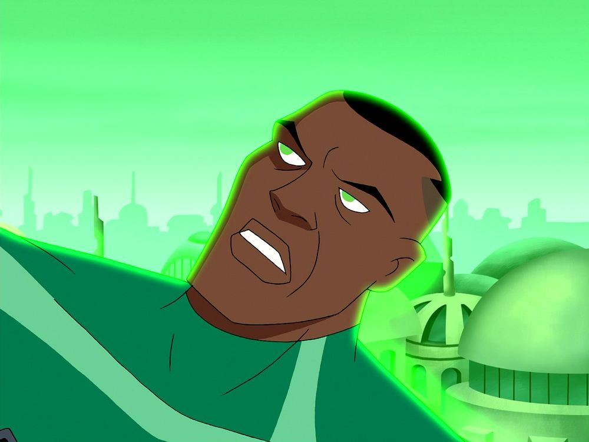
For a generation of fans, John Stewart was Green Lantern — the League's steady, no-nonsense ring-bearer across five seasons of DC's landmark animated universe.
2009
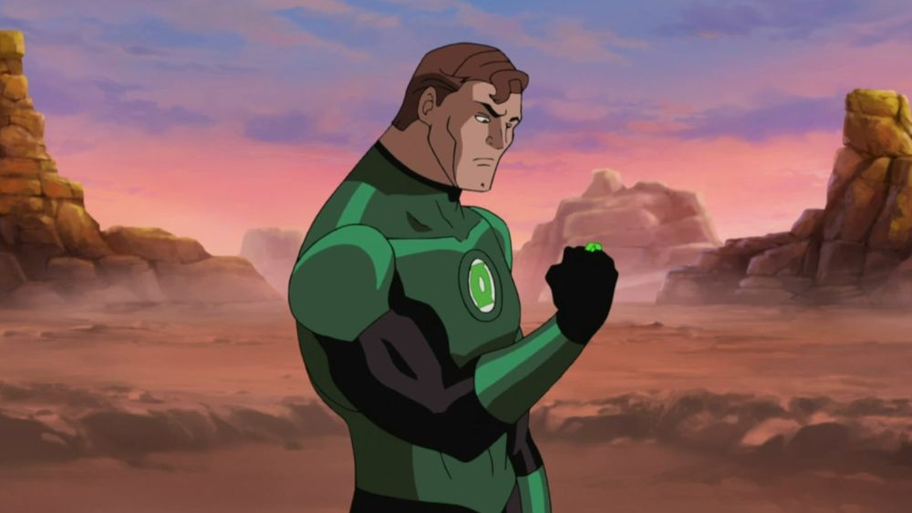
Hal Jordan's origin retold in animation — a rookie's first mission, and a mentor's betrayal. Sinestro has rarely been better on screen.
2011
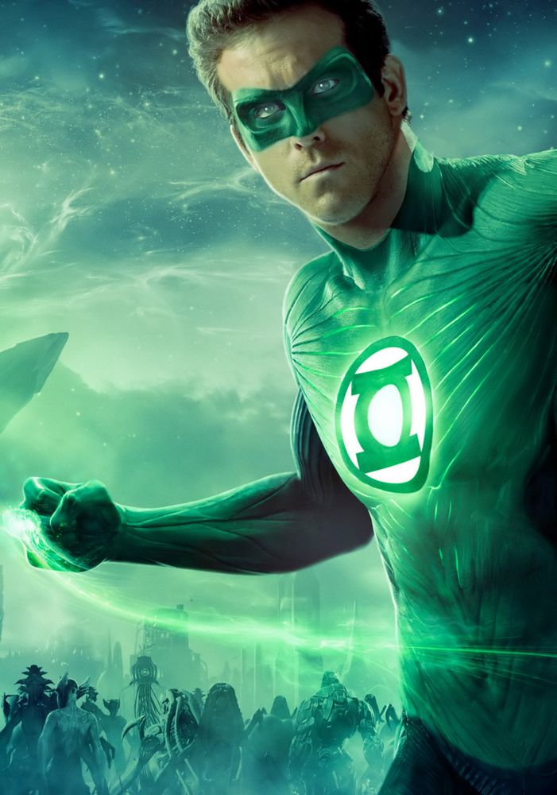
The Corps' big-screen debut: Ryan Reynolds as Hal Jordan, facing Parallax — fear itself, given cosmic scale. A rough flight, but a historic one.
2011
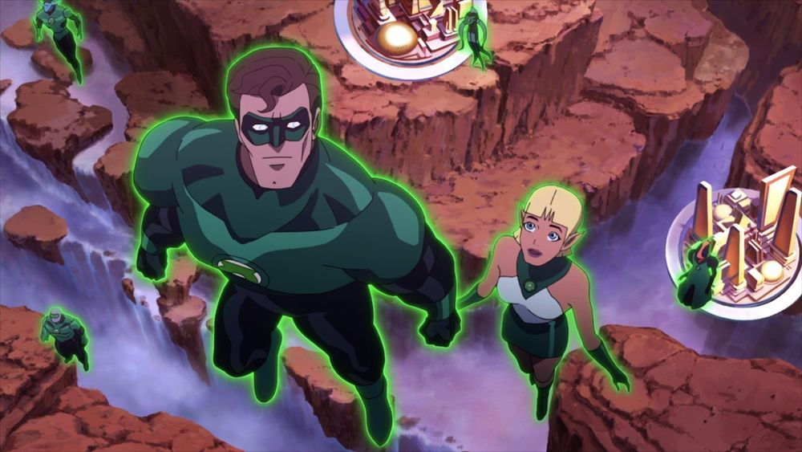
An animated anthology: six tales of the Corps, from the first Lantern to the present day — including Laira's story.
2011 – 2013
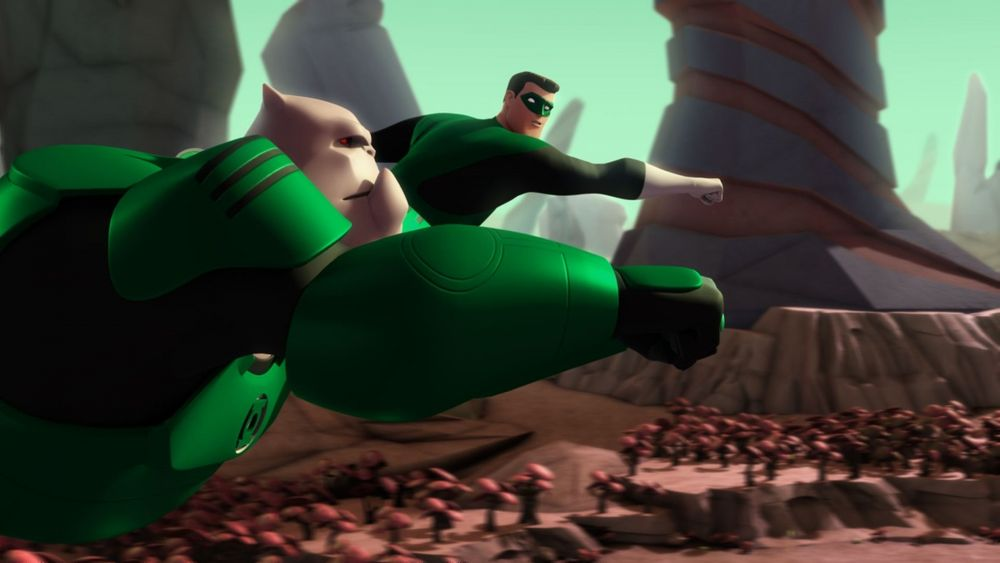
The Corps' best screen outing: a space-western with Hal Jordan, Kilowog, and Razer — a Red Lantern questioning his rage — on the universe's far frontier.
2026
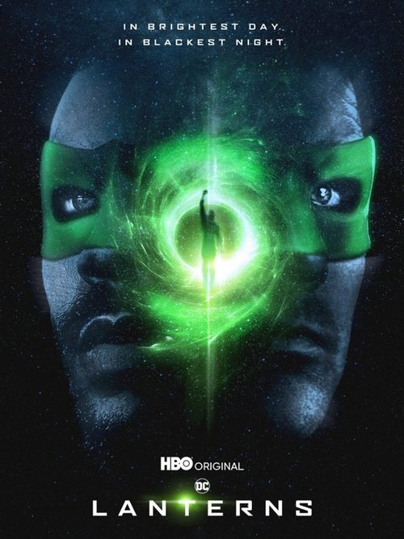
The biggest Green Lantern screen story ever: Hal Jordan and John Stewart — veteran and rookie — investigate a mystery on Earth that pulls them into the wider DC universe. A grounded, character-driven take on the mythos.
Screen images: promotional stills and posters — non-commercial fan tribute.
The lore goes deeper. Pick your next stop.